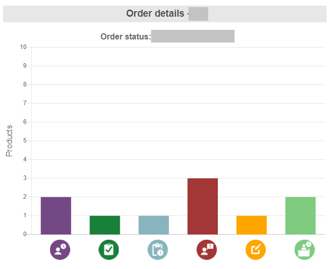

Internship

My second internship was at a company in Stockholm called CharpstAR where I collaborated with one more frontend developer who was also an intern. The purpose of my 16-week internship was to contribute in creating the frontend for a new platform which will be used by the company for the management of 3D assets. This platform will be used by emplyees with various roles like admin, Quality Assurance team and 3D artists, and of course by clients. The backend was created by a team before us, together with a preliminary frontend design which needed to be redesigned.
Requirements for this projects were established by the company's CEO and CTO, as well as by users after testing and receiving feedback.
Basic requirements for the project:
For this project I mainly worked with Vue and Vuetify. Basically I needed to translate the UI design from Figma, created by my colleague, to code. However, I had to make decisions when an element was not possible to create in the code or could be made different for better result. Such changes were communicated to the rest of the group before being realized.
One of my main tasks was to create a new bar graph to display data dynamically. After comparing a few relevant JavaScript libraries that can be used with Vue, I decided to use Vue-chart js. I was then able to create a bar graph that displays dynamic data and to even display icons instead of text as labels. These icons were created with Figma. Hovering over the bars also gives additional information about each product. The result was something like this: 
Fix issues in the frontend
Used Trello for working in a KANBAN type of board, with labels, descriptions and images.
As material and code for this project is confidential, unfortunately I can't provide links to finished material or code for the project. I can, however, show you a demo of the components I have worked with in an eventual video call or provide you references from the company's CEO who was also my mentor.